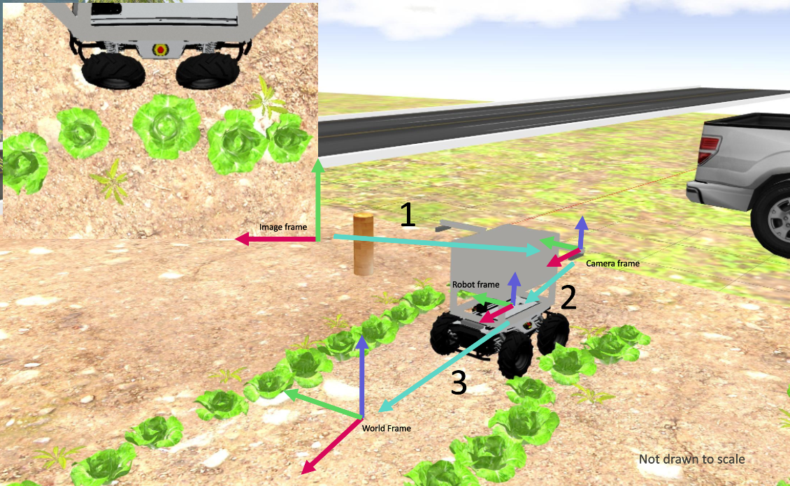

Additional Resources on Transforms¶
Introduction¶
To successfully solve the weed detection challenge (Task 2), you will need to understand how to use transforms. This page provides additional resources on transforms. While there might be alternative ways to solve the challenge, we suggest you consider these series of transformations to solve the challenge (see figure below for corresponding illustration):

Transform 1 (Image frame to camera frame)¶
First, you will need to transform the weed locations from the camera perspective to the camera reference frame. This is done by projecting the 2D points (u,v – pixels) in the image plane into the 3D cartesian points (x,y,z – meters) using a perspective transformation. To perform the transformation from image plane to cartesian coordinates in camera frame, you will need a few camera properties which you can find here.
Relevant resources for Transform 1 can be found here:
Transform 2 (Camera frame to robot frame)¶
Next, you will need to transform the weed locations from the camera reference frame to the robot reference frame. This would require making use of the ROS tf transformation module (see useful links below).
Transform 3 (robot frame to world frame)¶
Finally, you will need to transform the weed locations from the robot reference frame to the world frame. For this, you should consider getting the GPS coordinates of the robot and converting that to cartesian coordinate in the world frame using the gps2cartesian module described in Task 1.
Transform Resources¶
Here are some additional resources on coordinate transforms, especially in the context of robotics:
- Transformations Part 1: Coordinate Transforms and Robotics
- Transformations Part 2: Linear Transformations
- Transformations Part 3: 2D Rotations
- Transformations Part 4: Translations
- Transformations Part 5: Affine Transformation Matrices
- Transformations Part 6: 3D Rotations
- Coordinate Transformations in Robotics - MathWorks
- ROS Wiki: tf
- ROS Wiki: tf2
- Access the tf Transformation Tree in ROS